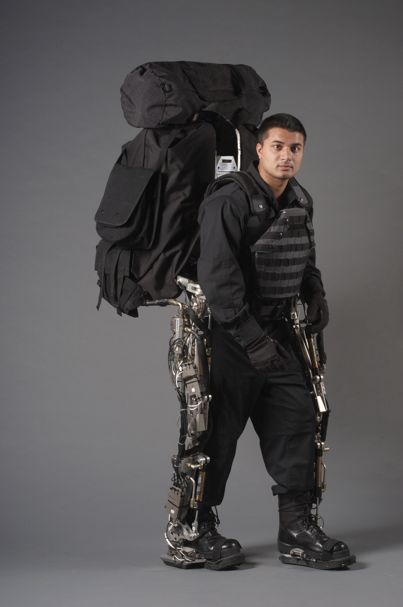

General
- type: lower extremity;
- total weight: 75 kg (exoskeleton and payload);
- degrees of freedom: 14 (7 on each leg);
Modules
- legs:
- hip:
- actuators: hydraulic cylinder for flexion/extension and abduction/adduction only;
- sensors: two accelerometers on the extreme mounting points. One force sensor in the output mounting point of the hydraulic cylinder;
- degrees of freedom: 3 (only abduction/adduction and flexion/extension axes pass through the human hip joint);
- knee:
- actuators: hydraulic cylinder for flexion/extension;
- sensors: One force sensor in the output mounting point of the hydraulic cylinder;
- degrees of freedom: 1
- ankle:
- actuators: hydraulic cylinder for flexion/extension;
- sensors: two accelerometers on the extreme mounting points. One force sensor in the output mounting point of the hydraulic cylinder;
- degrees of freedom: 3 (only flexion/extension axes pass through the human hip joint);
- foot:
- actuators: none, passive join only;
- sensors: load distribution sensor, measure the amount of human weight on each leg. Also has two accelerometers on each foot;
- degrees of freedom: 1
- torso:
- power source:
- output power: 2.27 kW;
References
[1] Adam Zoss, H. Kazerooni, Andrew Chu - On the Mechanical Design of the Berkeley Lower Extremity Exoskeleton (BLEEX), 2005. Link.